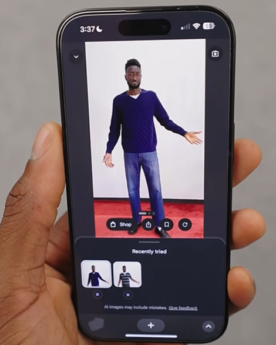

Trying on clothes with AI.

AI image generators have been remixing reality for a while now. They let people produce results like “what would our kids look like?” or recreating popular styles and formats from other creators. Every generated image is basically a collage of inspiration — not copied pixel-for-pixel, but clearly shaped by everything the model has seen before.
Now Google has taken that idea and applied it to shopping. In Google Shopping’s new feature, you upload a full-body photo of yourself and pick a piece of clothing from a product listing. The AI then swaps the clothing from the product photo onto your body in a generated image. And honestly… the result is exactly what you expect: a photo of you, wearing the clothes, as if someone had taken the picture that way in the first place.
It’s a clever tool and probably genuinely useful, but it also reinforces something important about modern AI images: realistic pictures of you can now be generated on demand. With the right inputs, the system can convincingly recreate you in situations that never happened. Helpful for shopping, sure — but also a reminder that “photo evidence” is becoming less and less tied to reality. If you want to see it in action, MKBHD did a quick demo here:
youtube.com/shorts/ufZ_u188GAM